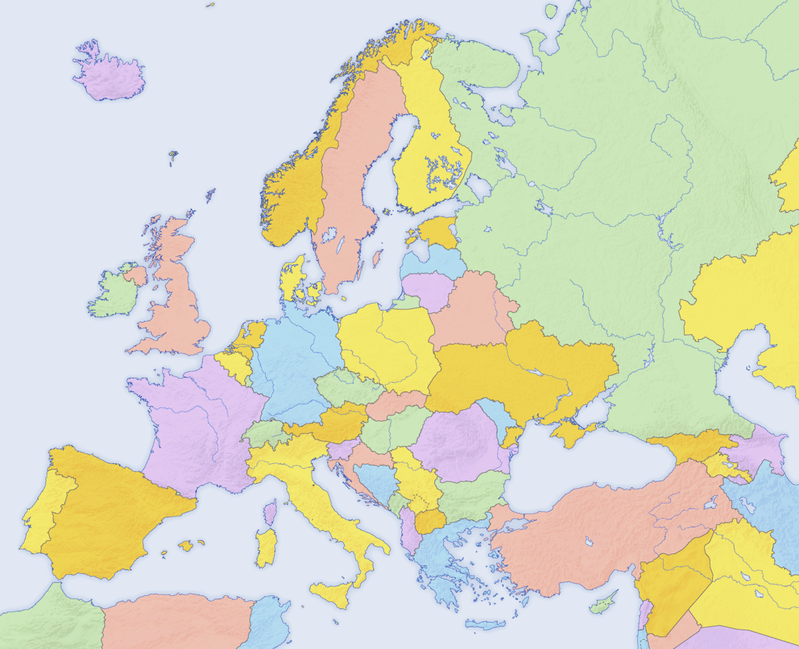

Welcome to Europe
Europe is a continent with historic cities, famous landmarks, different cultures and many travel opportunities in a relatively small area.
Travellers can visit mountain regions, coastal areas, museums, old town centres and modern capitals during one longer route or several short trips.
"Europe offers variety, history and culture in every direction."

Main sections of the website
- Countries presents selected destinations and a comparison table.
- Cities focuses on famous urban destinations and city breaks.
- Travel Tips contains planning advice and useful links.